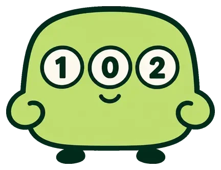

toto
Cast
予想
統計
データベース
ニュース
アーカイブ
ガイド
about
MATCHDAY · ROUND 1660
データで読む
totoの13試合
独自モデルがtoto全13試合の勝敗確率を予想。第1660回のtoto予想を公開中
今週の予想を見る
締切まであと
–

モデルのおすすめ
第1660回
荒れ気味
10/10(土)〜10/11(日)
1
C大阪
vs
横浜FM
1
0
2
2
FC東京
vs
浦和
1
0
2
3
福岡
vs
岡山
1
0
2
4
千葉
vs
長崎
1
0
2
5
水戸
vs
清水
1
0
2
6
京都
vs
町田
1
0
2
7
残り7試合を見る →
販売締切まで
–
販売終了
10/10(土) 13:50 締切（ネット）
おすすめの目 的中率
（検証46回）
73%
キャリーオーバー
0
円
第1658回 終了時点
前回の1等
1,478
万円
第1658回 · 2口
RECENT RESULTS
外れた回も
ぜんぶ見せる
過去の回をすべて見る →
7
/13
第1650回
9
/13
第1653回
11
/13
第1654回
10
/13
第1656回
8
/13
第1658回
01
予想ページを開く
02
おすすめをワンタップで入力
03
totoの販売サイトで購入
今週の13試合
モデルはどう読む？
第1660回の予想へ